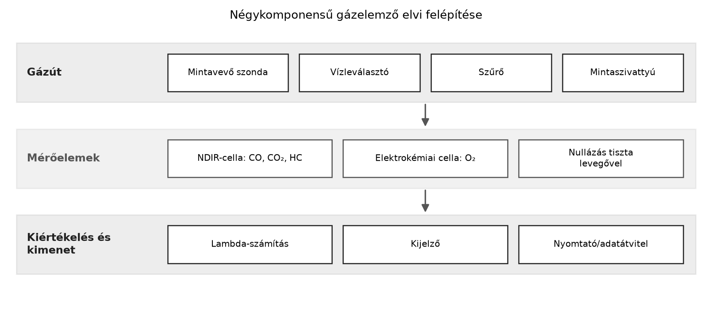
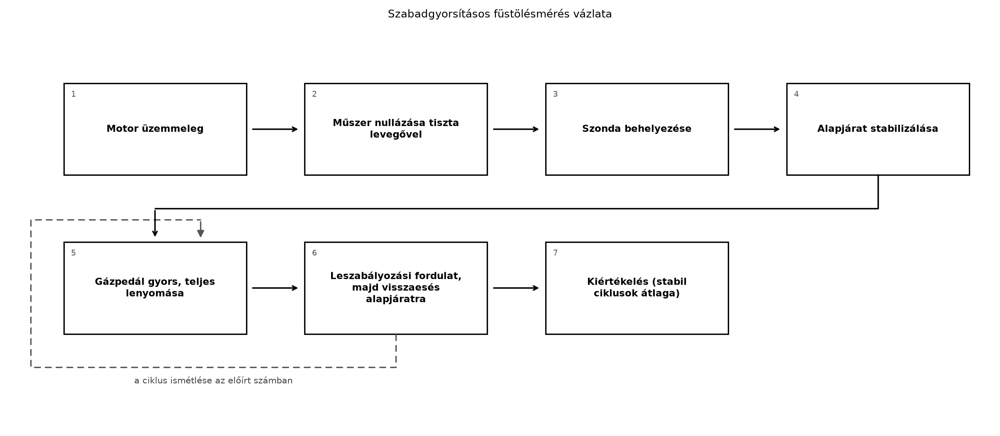

Egy benzines autó környezetvédelmi vizsgára készül, de a megrendelő szerint „túlmegy a zöldkártyán”, mert magas a CO és a HC. Az autószerelő műhelyben ilyenkor a gázelemző kerül elő: a szondát a kipufogóba helyezzük, és a kijelzőn azonnal látjuk, hogy dús vagy szegény-e a keverék, illetve hogy a katalizátor dolgozik-e. Egy dízel járműnél nem a CO-HC-probléma, hanem a látható füst és a lerakódott korom a jellemző panasz. Ilyenkor a szabadgyorsításos füstölésméréssel azt vizsgáljuk, hogy a motor milyen erősen füstöl a gyors gázadás során. Ebben az alfejezetben a két legfontosabb kipufogógáz-vizsgálati módszert járjuk körbe: a négykomponensű gázelemzést és a dízel füstölésmérést.
Képzeljünk el egy hordozható gázelemzőt. A kipufogócsőbe rozsdamentes mintavevő szonda nyúlik; a forró kipufogógáz egy vízleválasztón és szűrőn át jut a mérőkamrákba. A készülék belsejében infravörös fényforrás és detektorok találhatók, valamint egy oxigénérzékelő cella. A kijelzőn öt értéket látunk: CO (térfogat %), CO₂ (térfogat %), HC (ppm), O₂ (térfogat %), és a belőlük számolt λ. A másik kép a dízel füstölésmérő: itt a kipufogógáz egy mérőkamrán halad keresztül, amelyen fénysor világít át. Minél sötétebb a füst, annál kevesebb fény jut a vevőbe; ebből számoljuk a füst sűrűségét.


Definíció. A gázelemzés a benzin/autógáz üzemű motorok kipufogógázában a CO, CO₂, HC és O₂ koncentrációjának, valamint a belőlük számított légviszonynak a mérése, elsősorban a keverékképzés és a katalizátor hatékonyságának ellenőrzésére.
Definíció. A füstölésmérés (opacitásmérés) a dízelmotoros jármű kipufogógáza által okozott látható fényelnyelés mérése; a mért mennyiség a fényelnyelési (abszorpciós) együttható, jele , mértékegysége .
Összefüggés. A füstölésmérő kamráján áthaladó fény gyengülése:
ahol a tiszta levegővel mért fényerősség, a füstös gázzal mért fényerősség, az opacitás (0–1 között), pedig a mérőkamra hossza méterben.
Összefüggés. A CO-korrekció a minta hígulását (fals levegő, kipufogó-szivárgás, rossz szondahelyzet) egyenlíti ki: hígításkor a CO és a CO₂ azonos arányban csökken, ezért ha a CO+CO₂ összeg a tüzelőanyagra jellemző maximum alatt van, a mért CO-t a aránnyal felszorozzuk. A katalizátor átalakító hatását a korrekció nem szünteti meg (a katalizátorban a CO CO₂-vé oxidálódik, az összeg nem változik):
Példaként benzinnel. A pontos korrekciós tényezőt a mérőműszer gyártói beállítása és az alkalmazott előírás adja. (ellenőrizendő: a hatályos vizsgálati módszertan)
Megjegyzés. A szervizben a λ-t általában nem kézzel számoljuk, hanem a gázelemző kijelzett, gyártói összefüggéssel számított értékét használjuk. A mérés kiértékelésekor azonban ellenőriznünk kell, hogy a λ és a többi mért érték konzisztens-e. Például ha a λ ≈ 0,95, akkor CO-nak kimutathatónak, O₂-nek alacsonynak kell lennie; ha mégis magas az O₂, akkor kipufogórendszeri szivárgásra vagy mérési hibára kell gyanakodni.
A CO, CO₂ és HC mérésére leggyakrabban NDIR (nem diszperzív infravörös) cellákat használnak. Az infravörös sugárzás bizonyos hullámhosszain a CO, CO₂ és HC elnyelik a fényt. A mérőkamrán áthaladó fény gyengülése arányos az adott komponens koncentrációjával. A HC-mérésnél az infravörös cella a szén–hidrogén-kötések elnyelését látja; a ppm-ben (térfogatmilliomodrészben) kijelzett értéket az egyenértékű C₁ szénhidrogénként kezeli. Az O₂-t többnyire elektrokémiai cella méri, mert az oxigénmolekulák a cellában redoxreakcióban vesznek részt, és az ebből keletkező áram arányos az oxigénkoncentrációval. A cella idővel öregszik, ezért rendszeres kalibrálást igényel.
Kalibrálás. Mérés előtt a készüléket tiszta levegővel nullázzuk, szivárgásvizsgálatot végzünk, majd adott összetételű kalibráló gázzal ellenőrizzük. A kalibráló palack nyomáscsökkentőjén a kifúvó nyílás szabadon, hőforrástól távol legyen. A gázelemzőt nem szabad zárt térben nyitott láng közelében kalibrálni; a kalibráló gáz és a kipufogógáz belélegzése tilos.
A kipufogógáz elemzése akkor hasznos, ha a motort üzemi hőmérsékletre melegítettük, és a szonda mélyen, a kipufogócsőben rögzítve van.
| Mért érték | Jellemző egészséges érték katalizátoros, λ≈1-es motornál (Otto) | Mit jelez, ha magas/alacsony? |
|---|---|---|
| CO | 0,0–0,5 % | Dús keverék, hiányos oxidáció |
| CO₂ | 13–15 % | Alacsony: tökéletlen égés, hígítás vagy szivárgás |
| HC | 0–100 ppm | Égéskimaradás, dús keverék, gyújtáshiba, szivárgás |
| O₂ | 0,1–1 % | Magas: szegény keverék vagy kipufogószivárgás |
| λ | 0,97–1,03 | 1 alatt dús, 1 felett szegény |
Az értékek tanulási példák (ellenőrizendő: a gyártói adat és a hatályos előírás).
A CO-korrigált mérés célja a minta hígulásának kiegyenlítése. Ha a CO+CO₂ összeg a maximálishoz képest alacsony, mert a gáz hígult (fals levegő, szivárgás, rossz szondahelyzet), a CO-t felfelé korrigáljuk.
A ΔHC-mérés (itt: a HC-változás alapjárat és emelt fordulatszám között; nem azonos a hengerkiiktatásos ΔHC-eljárással, lásd a 37.1 alfejezetet) az alapjáraton és az emelt fordulatszámon mért HC-koncentráció különbsége:
Egy jól működő katalizátornál az emelt fordulatszámon a HC nem nő meg ugrásszerűen; ha a ΔHC alapjáratról emelt fordulatra nagy pozitív érték, a katalizátor öregedése vagy a gyújtás/keverékképzés hibája valószínű.
1. példa – Négykomponensű gázelemzés
kiértékelése.
Adott egy katalizátoros, szabályozott Otto-motor gázelemzési
jegyzőkönyve:
Alapjáraton: CO = 0,4 %, CO₂ = 13,6 %, HC = 140 ppm, O₂ = 0,7 %, λ =
0,98.
Emelt fordulaton: CO = 0,2 %, CO₂ = 14,2 %, HC = 90 ppm, O₂ = 0,5 %, λ =
1,01.
Keresett: a CO-korrigált érték emelt fordulaton és a ΔHC.
Képlet:
Behelyettesítve példaértékkel:
Az értékek katalizátoros motorra rendben vannak: CO és HC alacsony, a CO₂ magas, az O₂ alacsony, a ΔHC negatív, tehát a katalizátor emelt fordulaton is oxidálja a HC-t. ∎
2. példa – Füstölésmérés kiértékelése.
Adott egy dízelmotoros jármű füstölésmérő kamrája
hosszúságú. A mérés során a fényáteresztés
(),
az opacitás
.
Keresett: a fényelnyelési együttható.
Képlet:
Behelyettesítve:
Ha a hatályos előírás szerinti határérték például lenne, az autó elégtelen minősítést kapna; ha a határérték , akkor megfelelne. Ezért a pontos határértéket az adott jármű típusengedélye és a vizsgálati előírás szerint kell ellenőrizni. ∎
3. példa – Hibás keverék gázelemzése.
Egy benzines autónál a motor rángat, a fogyasztás magas. A gázelemző: CO
= 1,6 %, CO₂ = 11,8 %, HC = 320 ppm, O₂ = 0,8 %, λ = 0,91.
Értékelés: a CO és HC magas, a CO₂ alacsony, a λ határozottan dús
keveréket mutat. A dús üzem oka lehet hideg
hűtőfolyadék-hőmérséklet-jel, hibás levegőtömeg-érzékelő,
nyomásszabályzó, vagy a befecskendezők tömítetlensége. A gázelemzés
tehát nem helyettesíti a további műszeres hibakeresést, de pontosan
megmutatja, hogy a keverékképzés oldalán kell keresni.
Előírás. A környezetvédelmi felülvizsgálat során a járműre vonatkozó típusengedély és a hatályos magyar közlekedési hatósági előírás szerinti mérési módszert, határértékeket és dokumentálási kötelezettséget kell alkalmazni. Az itt megadott értékek tanulási példák. (ellenőrizendő: hatályos rendelet és vizsgálati módszertan)
A benzinmotoros járművek vizsgálata az alábbi kategóriák szerint különbözik:
A dízel füstölésmérés a szabadgyorsításos módszerrel történik: a motort üzemi hőmérsékletre kell melegíteni, alapjáraton stabilizálni, majd a gázpedált gyorsan, teljesen lenyomni, és a fordulatszámot visszaesni hagyni. A vizsgálóberendezés fordulatszámjelet is rögzít, és csak a megfelelő ciklusokat értékeli. A mért -értékek közül az utolsó, stabilizálódott mérések átlaga a jellemző. A határérték a jármű korától, típusától és az Euro-kategóriától függ; a régebbi szívó dízelnél például , régebbi turbódízelnél , újabb járműveknél , Euro 6-nál lehet a határ. (ellenőrizendő: 2014/45/EU II. melléklet, hazai módszertan)
Az A és B mód megjelölés a vizsgálati eljárásban használt üzemmódokra utalhat: például az A mód a gázelemzés/benzinmotorvizsgálat, a B mód a dízel füstölésmérés, vagy a dízel OBD-vizsgálatokat is tartalmazó kibővített mód. A pontos módmegjelölést és a mérési sorrendet a hatályos vizsgálati szoftver és az előírás adja. (ellenőrizendő: a hivatalos megnevezés)
Elektronikus tanúsítvány. A vizsgálati eredmény ma már elektronikusan kerül az állami nyilvántartásba; a tanúsítvány adatait a vizsgálóállomás a közlekedési hatósági rendszerbe továbbítja. A papír a gépjárművezetőnek adott igazolás, az érvényesség viszont a nyilvántartásban szereplő státusszal azonos. (ellenőrizendő: aktuális hatósági informatikai rendszer)
A gázelemző a motor nem invazív diagnosztikai eszköze: anélkül mutatja a keverékképzés és az égés minőségét, hogy a motort megbontanánk. A hibakeresési lánc:
| Gázelemzési kép | Valószínű hiba |
|---|---|
| CO magas, O₂ alacsony, λ < 0,97 | Dús keverék: hibás légmérő, hűtőfolyadék-hőmérséklet-jel, nyomásszabályzó, injektor |
| HC magas, kihagyás érzése | Gyújtáskimaradás, gyertyák, gyújtókábelek, tekercs, szívóoldali fals levegő |
| O₂ magas, CO alacsony, λ > 1,05 | Szegény keverék vagy kipufogószivárgás |
| CO₂ alacsony, O₂ magas | Kipufogószivárgás, hígítás, mérési hiba |
| CO és HC alacsony, de MIL és hibakód | Hibás katalizátor-hatékonyság, szondahiba, amely a gázelemzésen még nem látszik |
Valós eset – hibakeresés. Egy 12 éves, szabályozott katalizátoros benzines autó nem ment át a vizsgán: alapjáraton CO = 0,9 %, HC = 260 ppm, λ = 0,94; emelt fordulaton CO = 0,6 %, HC = 220 ppm, λ = 0,92. Az EOBD kiolvasásakor a szabályozás dús adaptációs hibát jelzett. A vizsgálat során a légtömegmérő és a szívócsőnyomás élő adata a modellértékkel egyezett, így a levegőoldal kizárható volt; az injektorok laborvizsgálata az egyik hengernél túl nagy szállítást mutatott. A hibás injektor cseréje és az elektródák, gyertyák ellenőrzése után a gázelemzés CO = 0,1 %, HC = 70 ppm, λ = 1,01 lett, az OBD readiness is kész állapotot jelzett. A tanulság: a gázelemzés a tünetet mutatta, az okot azonban a befecskendező és az élő adatok vizsgálata adta.
A dízelmotorok bonyolult utókezelő rendszereket használnak (DOC, DPF, SCR), ezért a látható füst önmagában nem jelenti ezek hibáját, de a koromterhelést jól mutatja. A füstölésmérőben a kipufogógáz egy fényúton halad keresztül; a fényforrás lehet zöld vagy vörös LED. A vevő fényintenzitása alapján a műszer kiszámolja az opacitást és a -értéket. A méréshez a szonda a kipufogócsőbe illeszkedik, a mérőkamra hosszát a műszer kalibrációja ismeri.
Az (a) részábrán a mintavevő szonda (1) a gyártói mélységig a kipufogócsőben van, csipesszel rögzítve (2); a mintavevő tömlő (3) a kondenzvíz-leválasztón (4) és a szűrőn (5) át a gázelemzőhöz (6) vezet, a fordulatszám-jeladó (7) és az olajhőmérő-szonda (8) a motor állapotát adja, a csővéget elszívó tölcsér (9) veszi körül. A (b) részábrán a rész-áramú szonda a gázt a mérőkamrába vezeti, amelyen a fényforrás fénye a vevőig átvilágít; a mérés a szabadgyorsítás pillanatában történik. A HTML-változatban az elemekre mutatva a nevük és a tipikus mérési hibájuk jelenik meg.
Szabadgyorsításos mérés lépései:
Ha a jármű OBD-vel rendelkezik, a füstölésmérés mellett a dízel OBD-t is kiolvassuk: DPF regenerációs állapot, EGR-hibák, SCR/AdBlue hibák, MIL és emissziós hibakódok. Egy aktív DPF-hiba vagy leragadt EGR a füstölésmérésen elégtelen eredményhez vezethet; a fizikai füst alacsony lehet, de az OBD-hiba mégis vizsgabukást jelent.
Cél. Négykomponensű gázelemzés és kiértékelés benzines járműnél, illetve szabadgyorsításos füstölésmérés dízelnél.
Jármű- és adatazonosítás. Alvázszám, típus, évjárat, tüzelőanyag, Euro-kategória, OBD-elv, katalizátor/DPF megléte. A méréshez használjuk a gyártói határértéket vagy a hatályos vizsgálati adatbázist.
Szükséges eszközök. Gázelemző vagy füstölésmérő, kalibráló gáz (gázelemzőhöz), fordulatszámmérő vagy OBD-olvasó, hűtőfolyadék-hőmérséklet-mérő, szivárgásvizsgáló, jegyzőkönyv.
Biztonsági korlát. A feladat tanműhelyi környezetre, oktató felügyeletére és a gyártói javítási utasítás betartására vonatkozik; a megadott értékek tanulási példák. A javítási útmutató szemléltetés: a gyártói javítási utasítás és adat a mérvadó; nagyfeszültségű (HV) járműrendszeren csak arra kiképzett, jogosult személy dolgozhat. A kipufogógáz járó motor mellett csak elszívással vizsgálható; a kipufogórendszer forró, a mérési pontok megérintése tilos. A gázelemző kalibráló palackját hőtől, szikrától, nyílt lángtól távol kell tartani.
Munkalépések.
Tipikus szerelői hibák e munkánál.
1. feladat (A). Sorolja fel a négykomponensű gázelemzés mért komponenseit és mértékegységeiket.
2. feladat (A). Írja le a füstölésmérő fényelnyelési együtthatójának képletét, és nevezze meg a benne szereplő mennyiségeket.
3. feladat (B). Egy dízelmotoros jármű füstölésmérésénél a fényáteresztés . A kamrahossz . Számolja ki az opacitást és a -értéket, és értékelje, ha a típusra megengedett például . (ellenőrizendő határérték)
4. feladat (B). Egy katalizátoros Otto-motor gázelemzése: CO = 0,3 %, CO₂ = 13,9 %, HC = 120 ppm, O₂ = 0,5 %, λ = 1,00. Emelt fordulaton CO = 0,2 %, CO₂ = 14,4 %, HC = 95 ppm, O₂ = 0,4 %, λ = 1,01. Számolja ki a CO-korrigált értéket emelt fordulaton és a ΔHC-t. Jó-e a katalizátor?
5. feladat (C). Egy benzines autónál a gázelemzés: CO = 0,1 %, CO₂ = 9,8 %, HC = 80 ppm, O₂ = 6,5 %, λ = 1,05. Magyarázza meg, miért ellentmondásos a λ és a CO₂/O₂; mire következtet?
6. feladat (D). Egy műszaki vizsgán a dízel füstölésmérés az első ciklusokban értéket ad, majd a 3. és 4. ciklusra és . A motor hidegen ment vizsgálatra, és a DPF regenerálásra kért. Mi a helyes eljárás, és miért?
Önellenőrzés – válaszok.
1. feladat megoldás.
CO (térfogat %, %), CO₂ (térfogat %, %), HC (térfogatmilliomodrész,
ppm), O₂ (térfogat %, %).
2. feladat megoldás.
,
ahol
a tiszta levegővel mért fényerősség,
a füstös gázzal mért fényerősség,
a mérőkamra hossza.
3. feladat megoldás.
;
.
Ez magasabb, mint a példaként megadott
,
tehát a mérés elégtelen lenne.
4. feladat megoldás.
A katalizátor jó, mert emelt fordulaton sem nő a HC, a CO₂ magas, CO
alacsony, λ≈1.
5. feladat megoldás.
A λ = 1,05 szegény, de a CO₂ 9,8 % túl alacsony, O₂ 6,5 % pedig nagyon
magas. Ez ellentmondásos, mert egy ilyen mértékű oxigénfelesleg és
alacsony CO₂ a kipufogószivárgás vagy a minta hígítása miatt jellemző,
nem pedig a motor tényleges keveréke miatt. Ellenőrizni kell a szondát,
a kipufogót, a kamra szivárgását.
6. feladat megoldás.
Hideg motoron és nem regenerált DPF-fel a mérés eleje hamis, magas
értéket adhat. A járművet üzemi hőmérsékletre kell melegíteni, a gyártói
előírás szerint kényszerregenerációt kell végezni, ha szükséges, majd a
vizsgálatot megismételni. A mérést csak a stabil ciklusokra kell
kiértékelni. A DPF eltávolítása, kiürítése vagy kikapcsolása tilos; a
jármű így vizsgáztatása jogellenes.
A gázelemzés a négykomponensű kipufogógáz-mérés: CO, CO₂, HC és O₂, valamint a belőlük számolt λ. Az NDIR-cella a CO, CO₂ és HC infravörös elnyelését, az elektrokémiai cella az O₂-t méri. A kalibrálás (nullázás, mérőgáz, szivárgásvizsgálat) a hiteles mérés feltétele. A CO-korrigált érték a hígulás kiegyenlítésével, a CO₂-maximumra vonatkoztatva mutatja a hígítatlan minta CO-ját; a ΔHC az emelt fordulaton és alapjáraton mért HC különbsége. A hatósági környezetvédelmi vizsgálat kategóriája eltérő: katalizátor nélküli, katalizátoros, szabályozott és OBD-s; az OBD-s járműnél a MIL/readiness is kötelező. A dízel füstölésmérés szabadgyorsításos módszerrel méri a fényelnyelési együtthatót: , mértékegysége 1/m. A a koromterhelést mutatja, a dízel OBD pedig az EGR-, DPF- és SCR-hibákat. Továbbvitt eredmény. A gázelemzés kiértékelése – CO, CO₂, O₂, HC, λ, CO-korrigált, ΔHC és – a későbbi vizsgafelkészülési feladatokban és a szervizdiagnosztikában is alapmódszer; alkalmazzuk a Környezetvédelmi felülvizsgálat, tanúsítvány és a jármű felkészítése a műszaki vizsgára és a Dízeldiagnosztika alfejezetekben. A hibás Járműveknél a mérést csak elszívással, üzemi hőmérsékleten végezhetjük; a mérési értékeket mindig a gyártói/hatósági adathoz kell viszonyítani.
Forrástípusok: hatályos hazai környezetvédelmi, közúti jármű műszaki vizsgálati és közlekedési hatósági rendeletek (5/1990. KÖHÉM, 6/1990. KÖHÉM és a vizsgálati módszertani utasítások), ENSZ-EGB előírások, ISO/OIML emissziós mérőműszerekre és mérési eljárásokra vonatkozó specifikációi, gyártói javítási-vizsgálati adatok, gázelemző és füstölésmérő gyártói kézikönyvek.
Jelölt, ellenőrizendő állítások: CO₂-max benzinre 14,5 % példaérték; a CO-korrigált képlet és a CO₂-max módszertan pontos tényezője; a katalizátoros és hagyományos Otto-járművek határértékei (CO, HC, λ); a dízel füstölésmérés határértékei (); a szabadgyorsításos mérés ciklusszáma és az A/B mód pontos jelentése; a dízel OBD-vizsgálat kötelező elemei; az elektronikus tanúsítvány adatkezelési rendszere. A fenti, jogszabályi és gyártói adatokra támaszkodó részeket a kiadás előtt a hatályos előírások szerint ellenőrizni kell.